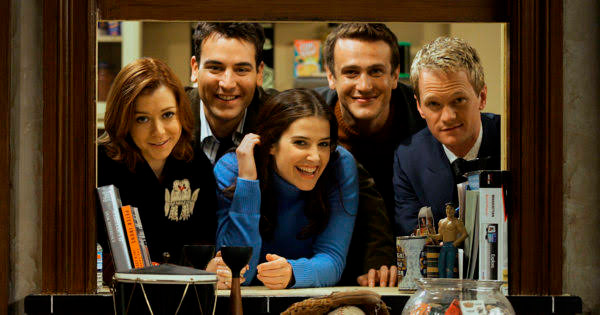
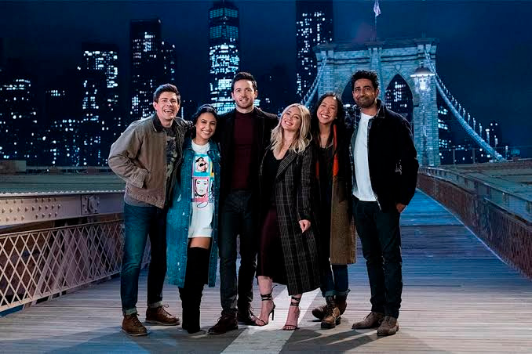

Júlia Matsuda
18 de Abril de 2022
No dia 09 desse mês de Março, o serviço de streaming Star+ (HULU nos EUA) adicionou em seu catálogo a mais nova série How I Met Your Father, um spin-off da famosa série de sitcom How I Met Your Mother (2005-2014).
Elenco da série original - How I Met Your Mother
Em How I Met Your Father conta a história de Sophie (Hilary Duff) uma mulher com seus 30 e poucos anos que, como seus amigos, tenta entender quem é, o que quer da vida e como faz para se relacionar com pessoas em plena era dos aplicativos de namoro. Num futuro próximo, uma Sophie mais velha (aqui, interpretada por Kim Cattrall, de Sex and the City), narra ao filho a história de como conheceu o pai dele.
Elenco de How I Met Your Father
A série contém apenas uma temporada (com a segunda que já está confirmadíssima por conta da boa recepção do público), com 10 episódios. Aqui no Brasil já foram lançados os quatro primeiros episódios e já no começo do mês de Maio, todos os episódio estarão disponíveis para os assinantes do Star+.
Vemos muitas referências de How I Met Your Mother na nova serie, desde a abertura com a mesma música e estilo de vídeo até o icônico apartamento do Marshall e do Ted que agora pertence a Jesse (Chris Lowell) e a Sid (Suraj Sharma).